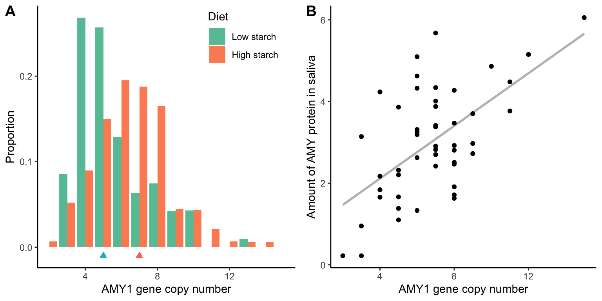
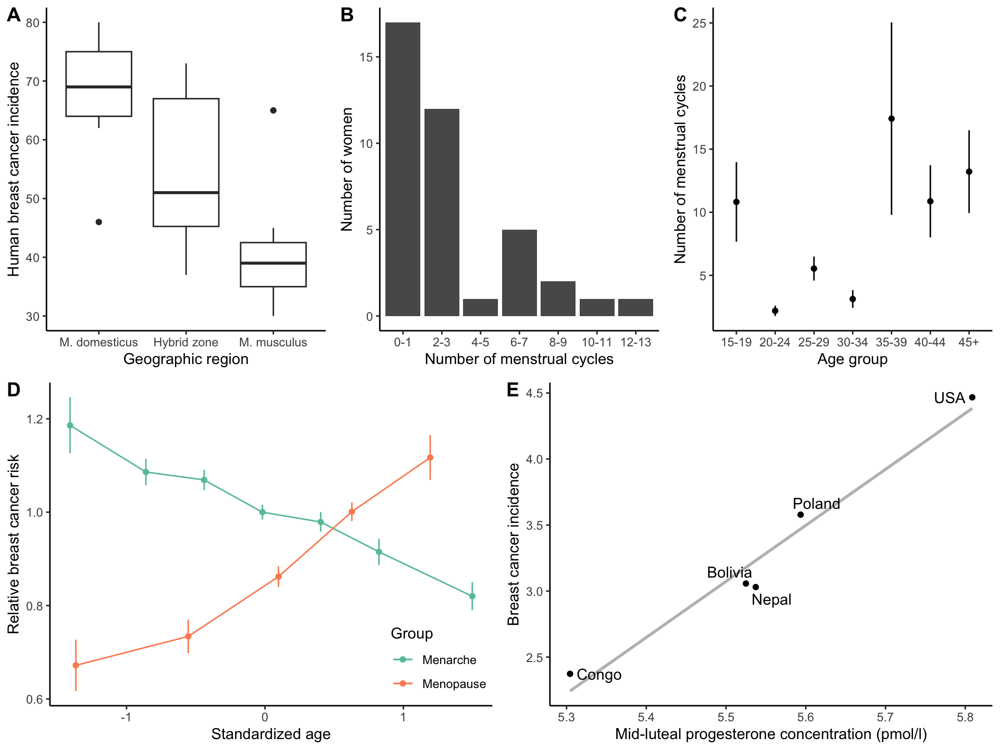
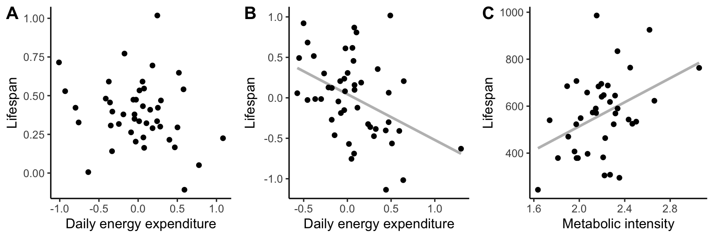
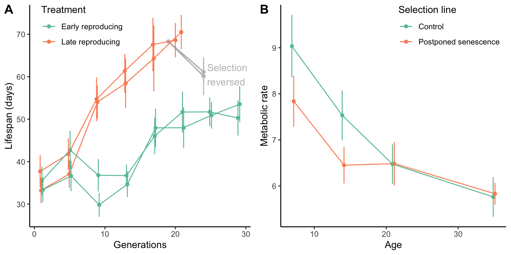
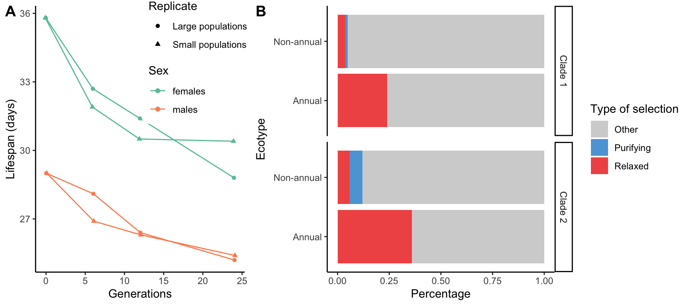
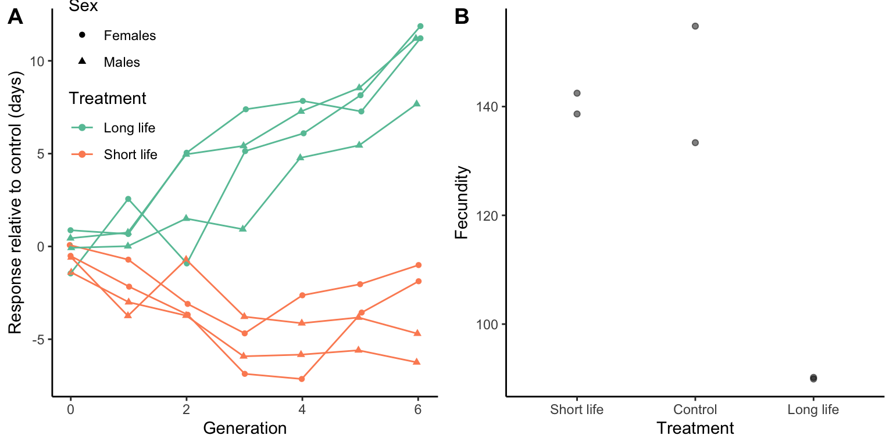
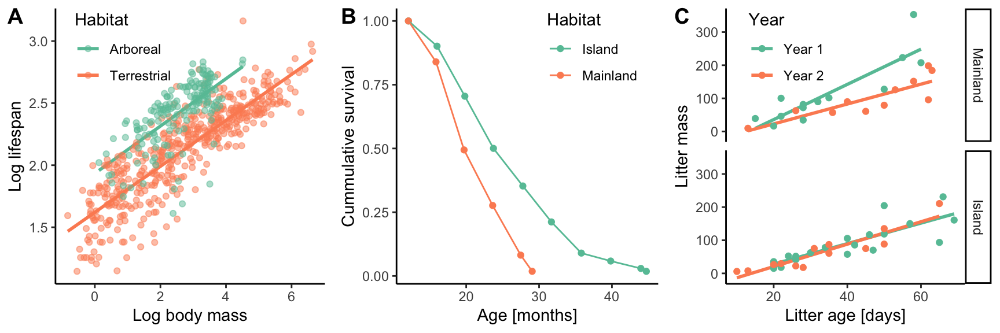

23 Evolutionary Medicine I: Aging and Diseases of Civilization
by Dr. Michael Tobler
DRAFT 20250113
The study of evolutionary biology is frequently seen as a purely academic exercise, albeit one that allows us to better understand—and perhaps appreciate—the living world around us. Over recent decades, however, evolutionary biology has matured from the basic science of understanding the origins and complexity of biological systems to an applied science for solving practical problems faced by humanity. Evolutionary principles are now routinely applied when developing strategies to address issues associated with human and environmental health in a time of rapid change. So, in the final section of this book, we will turn our attention to how we can apply evolutionary principles to better understand who we are, where we came from, and how we can address some of the major challenges faced by our society, especially in the context of human health and medicine.
The analytical tools used by evolutionary biologists to study the form and function of other organisms can, of course, be applied to the study of human form and function—though appropriate caution is always needed when interpreting such research findings. The added level of caution is not necessary because humans are in some way special or different from other organisms; rather, the study of humans bears unique constraints in terms of study design and the modes of inference we have at our disposal. It is simply not ethical to conduct certain experiments with human subjects. As such, we sometimes lack one of the critical scientific tools—the experiment with tightly controlled conditions—that allows for the establishment of causation. Hence, caution is required particularly because we often cannot rule out alternative hypotheses of observable phenomena.
23.1 Darwinian Medicine
Despite the limitations of applying evolutionary approaches to understand human nature, incorporation of evolutionary principles into our understanding of human health and disease has lead to important breakthroughs, with implications for the prevention and treatment of both individual and public health issues. While classic biomedical research has focused on understanding the molecular and physiological underpinnings of diseases, Darwinian medicine (or evolutionary medicine) is also concerned with how evolutionary history and evolutionary processes have impacted our propensity to contract diseases. Such approaches have lead to important insights about the biology of cancers, autoimmune diseases, and evolving pathogens. Table 12.1 lists some core principles of evolutionary medicine based on recommendation of The Association of American Medical Colleges and the Howard Hughes Medical Institute (Grunspan et al. 2018). While some medical schools have been slow to adopt the inclusion of evolutionary principles into their curricula, rigorous evolution education is now commonplace among healthcare professionals.
| Topic | Core principle |
|---|---|
| Types of explanation | Both proximate (mechanistic) and ultimate (evolutionary) explanations are needed to provide a full biological understanding of traits, including those that increase vulnerability to disease. |
| Evolutionary processes | All evolutionary processes, including natural selection, genetic drift, mutation, migration and non-random mating, are important for understanding traits and disease. |
| Reproductive success | Natural selection maximizes reproductive success, sometimes at the expense of health and longevity. |
| Sexual selection | Sexual selection shapes traits that result in different health risks between sexes. |
| Constraints | Several constraints inhibit the capacity of natural selection to shape traits that are hypothetically optimal for health. |
| Trade-off | Evolutionary changes in one trait that improves fitness can be linked to changes in other traits that decrease fitness. |
| Life history | Life history traits, such as age at first reproduction, reproductive lifespan and rate of senescence, are shaped by evolution and have implications for health and disease. |
| Levels of selection | Vulnerabilities to disease can result when selection has opposing effects at different levels (e.g., genetic elements, cells, organisms, kin and other levels). |
| Phylogeny | Tracing phylogenetic relationships for species, populations, traits or pathogens can provide insights into health and disease. |
| Coevolution | Coevolution among species can influence health and disease (e.g., evolutionary arms races and mutualistic relationships such as those seen in the microbiome). |
| Plasticity | Environmental factors can shift developmental trajectories in ways that influence health, and the plasticity of these trajectories can be the product of evolved adaptive mechanisms. |
| Defenses | Many signs and symptoms of disease (e.g., fever) are useful defenses, which can be pathological if dysregulated. |
| Mismatch | Disease risks can be altered for organisms living in environments that differ from those in which their ancestors evolved. |
| Cultural practices | Cultural practices can influence the evolution of humans and other species (including pathogens), in ways that can affect health and disease (e.g., anti-biotic use, birth practices, diet). |
We have already covered a wide range of topics associated with core concepts in evolutionary medicine, albeit not always in the explicit context of human health and disease. In this and the next chapter, we will explore select topics in more depth. First, we will examine how mismatches between modern environments and those of our ancestors impact our susceptibility to non–communicable diseases, and explore why we age and die. In the next chapter, we will discuss how evolutionary principles inform our understanding of pathogen spread and evolution, and how we can use cultural practices to impact disease dynamics in our population.
23.2 Diseases of Civilization
Human populations have undoubtedly evolved a wide variety of adaptations to local environmental conditions and lifestyles. Recent research has not only identified a number of phenotypic traits associated with adaptations to different diets, pathogens, oxygen levels, cold resistance, and exposure to very high or very low levels of UV (Table 12.2), but in many cases also found candidate genes that underlie adaptive trait variation in specific populations (Rees et al 2020). In all of these cases, local adaptation has evolved in response to very specific sources of selection, often over time periods spanning thousands of years. For example, evolution of lactase persistence was associated with the domestication of cattle and other dairy animals about 10,000 years ago, leading to an increase in lactase persistence alleles over the past 5,000 years, until they reached present-day levels (see Chapter 5). Similarly, human populations that traditionally eat a high-starch diet exhibit a high copy number of amylase genes (AMY1) compared to populations that traditionally eat a low-starch diet (Figure @ref(fig:amylase)A). AMY1 genes encode the enzyme amylase, which is responsible for catalyzing the hydrolysis of complex cabrohydrates to simple sugars during digestion, and copy number variation is directly correlated with the amount of amylase produced in the saliva (Figure @ref(fig:amylase)B). The surge of lactase persistence alleles in populations consuming diary and the high amylase copy numbers in populations eating a lot of starchy foods exemplify how evolution has shaped traits associated with digestion in response to cultural practices (i.e., regional food preferences).
| Adaptation | Population with adaptations |
|---|---|
| Diet | |
| Lactase persistence | Eurasians and Africans |
| Fatty diets | Greenlandic Inuit |
| Starchy diets | Across different populations |
| Low selenium levels | Chinese |
| Low iron levels | Europeans |
| Low calcium levels | Non-Africans |
| Frequent starvation | Samoans |
| Pathogens | |
| Malaria resistance | Sub-Saharan Africans |
| African sleeping sickness | Western Africans |
| Hepatitis C | Europeans |
| Oxidative stress | |
| High altitude | Tibetans, Andeans, and Ethiopians |
| Breath-holding diving | Bajau (Indonesia) |
| Cold resistance | |
| Cold perception | Eurasians |
| Energy regulation, metabolism, and cardiovascular function | Siberians |
| Differentiation of brown and brite adipocytes | Greenlandic Inuit |
| UV exposure | |
| Pigmentation changes | Across different populations |
| Low vitamin D levels | Northern Europeans |
The onset of agriculture 10,000 years ago was not the last time that human lifestyles have changed dramatically. Perhaps the most important change in recent human evolution was the the industrial revolution, which occurred between 1760 and 1840. This time period was marked by a transition in manufacturing processes, initially in Europe and the United States, where goods previously made by hand were now produced with machines powered by steam and, later, electricity. The industrial revolution led to unprecedented human population growth and population connectivity associated with increased globalization. During this time, almost every aspect of daily life changed. Humans changed the ways they moved around, transitioning from walking to using transportation. The structure of social interactions changed both at larger scales (aggregation of people into growing urban centers) and at smaller scales (changes in family structures and the social roles of men and women). Humans had increasing access to medical treatments, but also increasing exposure to environmental pollutants. And perhaps most significantly, humans completely changed what they ate; today most foods are industrially processed products made from cereal grains, refined sugars, and an excess of trans and saturated fats. In many ways, our modern life bears little resemblance to that of our ancestors.
23.2.1 Modern Hunter-Gatherers and Urbanites
The profound changes to our environment and our lifestyles over the past 10,000 years—really, mostly over the past 250 years—are illustrated by comparing modern urbanites and modern hunter-gatherers. Modern hunter-gatherers still obtain the majority of their food by foraging and hunting, similar to most humans prior to the sedentary agricultural societies that arose 10,000 years ago. Modern hunter-gatherers include the Inuit and Iñupiat peoples from Arctic regions in North America and Greenland, the Huaorani and Yąnomamö peoples in South America, the Orang Patek peoples of Palawan, the Pila Nguru of Australia, as well as the Bayaka and San peoples of sub-Saharan Africa, among many others (Figure @ref(fig:hgdiet)A). While modern urbanites walk an average of 2.5 km per day and burn energy at a rate of about 1.18 times the resting metabolic rate, hunter-gatherers of the !Kung in the Kalahari desert and the Aché in Paraguay walk between 14.9 and 19.2 km per day and burn energy at a rate of 1.71-2.15 times the resting metabolic rate (Cordain et al. 1997). At the same time, hunter-gatherers have a lower caloric intake (~3,000 kcal/day vs. 3,600 kcal/day in an average American), and their diet primarily consists of lean game, fish and shellfish, eggs, fruits, vegetables, and other plant products (although there are staggering geographic and cultural differences; Figure @ref(fig:hgdiet)B). Hunter-gatherer diets are also exceedingly nutritious, providing vitamins, minerals, and dietary fibers at rates that far exceed the recommended daily allowances set by the U.S. Food and Nutrition Board (Eaton and Konner 1997).
Not surprisingly, our sedentary lifestyles and splurges rich in sugar, fat, and alcohol have been associated with a wide variety of health issues. Average Americans exhibit higher blood cholesterol levels (204 mg/dl vs. 121 in !Kung and 141 in Inuit) and higher body mass indices (>29 in 2018 vs. 19 in !Kung and 24 in Inuit; Leonard 2002). More over, our modern lifestyles and diets have been associated with a wide variety of health conditions that are comparatively rare or even absent in hunter-gatherer communities: cardiovascular diseases like heart attacks and strokes; cancer in a variety of forms; autoimmune diseases like diabetes, celiac disease, and multiple sclerosis; neurodegenerative diseases like Alzheimer’s and Parkinson’s disease; and mental health issues like depression, anxiety, and substance abuse. Due to the rarity of these diseases in hunter-gatherer communities and the documented links to lifestyle and eating habits, these diseases are also know as “diseases of civilization” or “lifestyle diseases”. The impacts of diseases of civilization are profound. While over 60 % of deaths in the U.S. in 1900 were caused by infectious diseases, by 1940 the majority of deaths were associated with with heart disease, cancers, and non-communicable diseases. Today, 7 out of the 10 leading causes of death in the U.S. are non-communicable and have significant risk factors associated with modern life.
23.2.2 Old Adaptations in a Modern World
Human populations—with their large census sizes and accordingly large pools of standing genetic variation—are undoubtedly able to respond to selection and adapt to changing environmental conditions. As explained above, we know how the increase in dairy and starchy foods during the advent of agriculture exerted selection on a variety of digestive enzymes, leading to high frequencies of lactose persistence alleles (Chapter 5) and high copy numbers of amylase genes (Figure @ref(fig:amylase)). Evolutionary change in humans is thus certainly responsive to the cultural practices that vary among populations. Still, evolution obviously takes time, and many of the drastic changes in diet and lifestyle only date back a handful of generations. Change in cultural practices—which has happened in just a few generations—has consequently outpaced evolutionary change by natural selection.
As we study adaptive trait variation in humans, we consequently need to ask ourselves what environments humans are actually adapted to. The environments experienced by modern urbanites—and even those of our ancestors within the past few millenia, since the start of recorded history (~5,000 years ago)—bear little resemblance to the environments humans experienced for the vast majority of their evolutionary history. Considering that anatomically modern Homo sapiens emerged around 300,000 years ago, even the advent of agriculture only reaches back into about 3 % of our species’ history. Many of the traits that make us human evolved during the Stone Age, when humans lived predominantly as nomadic hunter-gatherers.
Diseases of civilization may therefore be a consequence of mismatch between traits evolved in another environmental context and the environment we are currently experiencing. Traits that were previously adaptive or selectively neutral may suddenly have a negative impact on health and, ultimately, fitness. For example, an apatite for fatty and sugary foods and alcohol may have been adaptive or selectively neutral when these resources were scarce and periodic starvation was common. However, in an age where these goods are perpetually available—thanks to cooperate lobbying and governmental regulation, often at a lower prices than healthier options—excessive intake can lead to obesity, diabetes, and substance abuse, with all of their associated health issues.
In other cases, diseases of civilization may be a consequence of hidden phenotypic variation, uncovered when development is impacted by novel environmental conditions or habits (i.e., phenotypic plasticity in response to novel environmental cues not present before). For example, myopia (nearsightedness) is rare in hunter-gatherer communities, but 22 % of humans worldwide are myopic to a degree that they require glasses. The incidence of myopia has been drastically increasing since World War I (Figure @ref(fig:myopia)A) and coincided with the introduction for formalized schooling in many countries. Comparison of the frequency of myopia across countries with different education systems still reveals substantial differences in the prevalence of myopia today (Figure @ref(fig:myopia)B).
It turns out that the increase in myopia prevalence was an inadvertent consequence of school work that emphasizes near-field visual work, like reading books and working on computer monitors. The visual experience during development influences the growth of the eye, and extensive near-field work ultimately impacts far-field vision. It is important to note that there is also a heritable component to myopia, and people vary in the degree to which they are susceptible to development of myopia (i.e., there is genetic variation for plasticity in this trait). Essentially, the alleles that control the propensity of an individual to develop myopia in response to near-field visual work were selectively neutral in the past, when such work was comparatively rare. With the change of schooling and workplace practices, however, that hidden propensity to change eye growth in response to an environmental cue became not only visible, but led to suboptimal trait expression that was not previously tested by natural selection. The availability of mitigating measures (glasses, contact lenses, laser surgeries) indicate that alleles increasing susceptibility to myopia will likely remain in human populations at a high frequency.
Diseases of civilization may be prevalent in modern societies because not enough time has passed to match our bodies to our novel lifestyles. In other words, diseases of civilization are a symptom of a lack of adaptation; as a population, we have not yet evolved the defenses necessary to fend off many perils of modern life (e.g., sedentary lifestyles and high-calorie diets). Studying diseases of civilization from an evolutionary perspective allows us to better understand why their prevalence is so high. While these insights may not be as important for developing treatments for such diseases (that is explored by biomedical research, which illuminates the proximate causes of disease), understanding the ultimate causes behind disease development is critical for disease prevention. Understanding how our traits from ancient times respond to the novel environmental conditions that we have created for ourselves is key to preventative healthcare that evaluates how environmental factors and lifestyle choices affect disease risk.
23.2.3 An Example: Breast Cancer
One of the most common types of cancer is breast cancer. In the U.S. alone, there are over 284,000 new cases and over 44,000 deaths every single year, primarily in women. I want to use breast cancer as a case study to explore how evolutionary perspectives might inform our understanding and the prevention of a disease, as breast cancer has a number of risk factors that relate to evolutionary genetics and diseases of civilization.
Research has indicated that genetic predisposition plays a role in the development of some breast cancers. Particularly, mutations in the BRCA1 and BRCA2 genes—two tumor suppressor genes—have been associated with an elevated risk for breast cancer in women. While only 5-10 % of breast cancers are associated with BRCA mutations, 40-65 % of women with a BRCA mutations are treated for breast cancer within their lifetime. As a consequence, only 59 % of women with a BRCA1 mutation and 71 % of women with a BRCA2 mutation reach an age of 70 (compared 84 % of women without this mutation). Hence, selection against mutations in BRAC genes should be strong, and deleterious alleles should be accordingly rare. Population genetic analyses, however, have indicated that 1 in 381 women (0.26%) carries a BRAC1 mutation and 1 in 277 (0.36%) a BRAC 2 mutation, and these allele frequencies are much higher than expected considering the high incidence of disease. Interestingly, at least BRAC1 appears to be under positive selection in humans and chimpanzees, suggesting that natural selection acts to promote alternative genetic variants at that locus rather than removing them (Huttley et al. 2000). Cochran and colleagues (2006) proposed that mutations in BRAC1 stimulate neural growth and might be linked to higher cognitive abilities, providing fitness benefits that balance costs associated with cancer development. However, rigorous tests of this hypothesis are still lacking.
Besides genetic factors, environmental and lifestyle factors also affect breast cancer risk. Early work attempting to explain the high frequency of breast cancer focused on the hypothesis that this type of cancer was caused by a pathogen. In mice, tumors in the mammary glands are frequently associated with a viral infection (mouse mammary tumor virus, MMTV), and researchers have hypothesized that MMTV or MMTV-like viruses could also be responsible for causing tumors in women. This hypothesis was supported by two primary findings: (1) Some cells isolated from human breast cancers indeed exhibited DNA sequences which resembled MMTV. (2) Breast cancer rates in Europe appeared to be correlated with the presence of different species of mice, Mus domesticus, which occurs in western Europe, and M. musculus, which occurs in eastern Europe. MMTV frequencies differ significantly between the two species and are much higher in M. domesticus. Intriguingly, breast cancer rates in women are higher in countries with M. domesticus than in countries with M. musculus, with countries in the hybrid zone between the two species being intermediate (Figure @ref(fig:bcancer)A). Some researchers have taken this as evidence for a causal link between MMTV and human breast cancers, even though no MMTV particles have ever been found in human cancer samples. Correlation, in this case, may consequently not be causation. If you consider the distributional border that separates the two species (it runs through Germany, south through the Balkans), it does not take a whole lot of detective work to come up with a tangible list of confounding variables that might also impact breast cancer risk. The distribution of the two mouse species is actually paralleled by major socioeconomic differences between countries in western and eastern Europe, which arose as a consequence of the Iron Curtain that separated the Soviet block from the West and its allied states. For over 50 years, lifestyles across the divided Europe were drastically different.
The question then becomes: what are the lifestyle changes that potentially impact breast cancer risks? Besides obesity and substance abuse, changes in family planning and reproductive medicine have been associated with the development of breast cancers. Women in the western world, on average, have relatively few children, and many use hormonal birth control that strictly manages menstrual cycling. Most women in our society have 9-12 menstrual cycles per year until they reach menopause. This high rate of cycling, however, seems to be a relatively new phenomenon. In more traditional societies, where women bear more children and contraceptives are less common, menstrual cycles are much more irregular throughout women’s life. For example, pre-menopausal Dogon women from Mali on average have only three menstrual cycles over a period of two years (Figure @ref(fig:bcancer)B), which is about 85 % less than women in our society. The reduced number of menstrual cycles in Dogon women is not associated with a later onset of menarche or an early onset of menopause, but with a lower frequency of cycles—especially in women aged 20-34 (Figure @ref(fig:bcancer)C). Women of that age have a reduced number of cycles because they are either pregnant or are going through amenorrhea associated with lactation.
So, what might be the causal relationship between menstrual cycling and breast cancer? Pulses of estrogen and progesterone in the post-ovulatory phase of the menstrual cycle stimulate the proliferation of breast tissues, leading to the cyclical changes in breast size and shape experienced by many women. Signals for cell proliferation, however, are not only received by healthy breast cells, but also cells that exhibit somatic mutations and are potential precursors to tumors. Hence, the higher frequency of menstrual cycles increases the number of growth signals potential cancer cells receive over the course of a woman’s life, and thus, the likelihood that malignant tumors eventually develop. The link between menstrual cycling and breast cancer risk is not only supported by comparisons of menstruation rates between cultures, but also within our own society. For example, late onset menarche and early onset menopause that reduce the number of lifetime menstrual cycles are also correlated with breast cancer risk (Figure @ref(fig:bcancer)D). Finally, breast cancer risk is not only associated with the number of hormone surges that coincide with menstrual cycling, but also with the strength of the hormone peak. For example, women in industrialized nations that have a comparatively high energy intake also exhibit higher progesterone concentrations during the post-ovulatory phase, which in turn are correlated with the incidence of breast cancers across countries (Figure @ref(fig:bcancer)E).
The high rate of breast cancer in our society is therefore at least in part a consequence of changed habits in reproduction and family planning. An inadvertent consequence of a reduced number of pregnancies and hormonal birth control is the increase in growth stimuli received by cancer precursors after every ovulation. Pharmaceutical research has consequently started to develop methods of hormonal birth control that reduce the number cycles each year to 1-4 (e.g., Seaonale, Quartette, and Amethyst). Ironically, these drugs were—and still are—catching on slowly, because monthly menstrual cycling is perceived as natural and reduced cycling as artificial, and thus, perhaps unhealthy. As a consequence, extended-use birth control drugs are typically advertised for the convenience they provide and not for the potential health benefits.

23.3 Why We Age… and Die
The inevitability of aging and death is an intriguing biological paradox that warrants closer examination from an evolutionary perspective. Both scientists and science fiction writers have been obsessed with the fountain of youth and the secret to eternal life—without much success. So why is it that we age and ultimately die? Why hasn’t natural selection favored alleles that prolong survival extensively—or even eternally—to allow for many bouts of reproduction? After all, it seems like an immortal variant would have a fitness advantage over any variant that succumbs to an early death. When pondering why we age and die, Nobel laureate Francis Jacob said it most elegantly in 1982 :
“It is truly amazing that a complex organism, formed through an extraordinarily intricate process of morphogenesis, should be unable to perform the much simpler task of merely maintaining what already exists.”
Francis Jacob, 1982
The inability of organisms to maintain their bodies is the ultimate cause of aging (also known as senescence): a decline in survivability and reproductive capacity with increasing age. Aging is almost universal in multicellular organisms and even present in some microbes, where asymmetric cell divisions leave behind larger mother cells with reduced viability. Only a few organisms that appear to defy age-related deterioration have been found so far, and they include some flatworms (Platyhelminthes) and small cnidarians (Hydra) with asexual reproduction.
23.3.1 Rate of Living Hypothesis
One hypothesis as to why natural selection has not favored alleles for longer lifespans (or even eternal life) is that it simply can’t. Perhaps natural selection has already pushed the lifespan to the maximum , such that the maximum lifespans observed in different species today are bound by intrinsic constraints that are impossible for natural selection to overcome. The rate of living hypothesis posits that ageing is an inadvertent byproduct of metabolic activity. As cells live and proliferate, they continue to accrue irreparable damage to the point that sustaining proper function is impossible.
The rate of living hypothesis makes two testable predictions: (1) The rate of aging in different species should be correlated with the pace of life. Organisms that have a very fast mass-specific metabolism (e.g., bats and hummingbirds) should age comparatively fast and accordingly have short lifespans, while aging in those with slow mass-specific metabolism (e.g., sloths and some deep-sea animals) should age much slower and have longer lifespans. (2) Because organisms have already been selected to resist and repair damage at their maximum capacity and lifespan is constrained by other factors, species should not be able to evolve longer lifespans.
Prediction 1: Metabolism and Aging
If aging was an inadvertent consequence of metabolic activity, we would expect clear correlations between mass-specific energy expenditure (i.e., metabolic rate) and lifespan. Some organisms should live fast and die young, while others live more slowly and die old. A wide variety of approaches have been used to test this prediction. For example, if the rate of living theory were true, all organisms should have roughly the same lifetime energy expenditure—but it turns out lifetime energy expenditure varies drastically, even among species of mammals. More direct tests have looked at correlations between metabolic rate and lifespan, and again support for the hypothesis is mixed at best. While there is a negative correlation between energy expenditure and lifespan among mammals, the same correlation is absent among birds (Figure @ref(fig:ltee)A-B). More over, intraspecific variation in metabolism of mice was positively correlated with lifespan; mice with higher metabolic activity actually lived longer than those with lower metabolic activity (Figure @ref(fig:ltee)C), a pattern opposite of that predicted by the rate of living hypothesis. Consequently, neither patterns of lifetime energy expenditure nor correlations between energy expenditure and lifespan support the idea that there are internal constrains associated with metabolism to explain why organisms age.

Prediction 2: Selection on Life Span
If intrinsic constraints prevented natural selection from favoring longer lifespan, selection on lifespan should have no evolutionary effects. To test this hypothesis, researchers have used a number of selection experiments where they control when organisms reproduce. For example, selection experiments using Drosophila melanogaster continuously propagated offspring that were produced by young adults (early reproducing) or by older individuals that were towards the maximum lifespan (late reproducing). Contrary to the prediction of the rate of living hypothesis, the longevity of flies in the late-reproducing selection lines increased substantially from around 35 to almost 70 days, a 100 % increase, in just 20 generations (Figure @ref(fig:sellong)A). Reversal of selection in generation 19 also lead to a decrease of longevity, indicating that lifespan can evolve rapidly in either direction (gray line in Figure @ref(fig:sellong)A). The evolution of longer lifespans would be consistent with the rate of living hypothesis if flies that evolved a longer lifespan also evolved lower metabolic rates. While flies with postponed senescence indeed have a lower metabolic rate compared to control flies in the first two weeks of their lives, these differences disappear later in life (Figure @ref(fig:sellong)B), and the overall magnitude of difference in metabolic rate is not sufficient to explain observed differences in longevity.

While the rate of living hypothesis and related ideas (e.g., genomic instability, telomere attrition, and epigenetic alterations) have stimulated diverse research projects about why we age and uncovered important proximate mechanisms of aging, the central premises of these ideas do not hold up to scrutiny. There does not appear to be a universal intrinsic constraint that limits how long cells or organisms can live, and lifespan can clearly evolve in either direction when selection is applied. So, if longer lifespans are technically possible, why is it that they do not evolve?
23.3.2 Evolutionary Theories of Aging
Evolutionary explanations for aging focus less on the inability of organisms to repair damage that accrues from metabolic activity, and more on the costs and benefits associated with a failure to repair damage as it arises. As in the rate of living hypothesis, aging from an evolutionary perspective is a consequence of gradual decay—but early death does not necessarily translate to lower fitness. To examine the relationship between aging and fitness, we will focus on two non-mutually exclusive hypotheses: (1) The mutation accumulation hypothesis posits that the costs associated with a failure to repair damage and the resulting aging are minimal. (2) The antagonistic pleitropy hypothesis proposes that there may even be benefits associated with with a failure to repair damage and the resulting aging.
Mutation-Accumulation Hypothesis
The mutation-accumulation hypothesis explains aging through a decline in the effectiveness of selection as organisms age. The older an individual is, the lower its chances are to produce future offspring (this future reproductive potential is also called the residual reproductive value). Hence, the residual reproductive value declines as a function of age. If a deleterious mutation arises that causes a loss of function early in life, the mutation is strongly selected against, because the residual reproductive value for young individuals is high and the fitness consequences of an early-acting loss of function mutation are accordingly high. However, if a deleterious mutation causes a similar loss of function much later in life, the fitness costs are much lower because the residual reproductive value is also lower. In other words, if a deleterious mutation unfolds its effects late it life, that mutation will already have been passed on to the next generation before the carrier ever experiences the detrimental effects. The detrimental effects are simply not visible to natural selection until it is too late and the deleterious alleles have already been inherited by individuals of the next generation. Consequently, deleterious mutations that unfold their effects late in life can accumulate in a population over time because selection against those mutations is weak.
Experiments have shown that deleterious mutations behind aging can indeed accumulate in populations. For example, Reed and Bryant (2000) studied large and small populations of houseflies (Musca domestica). Normally, male houseflies live for about 28 days and females for about 36 days, but the researchers only allowed the flies to reproduce for four or five days after they reached sexual maturity. Hence, any deleterious mutations that unfolded their effects after day five of a fly’s adult life had suddenly become selectively neutral. After 24 generations of reproduction limited to early adults, the lifespan of flies significantly declined to just 25 days (13 % decline) in males and about 30 days (18 % decline) in females—irrespective of population size (Figure @ref(fig:delmu)A). This decline in lifespan is a direct consequence of selection’s inability to remove deleterious mutations with late-acting fitness effects from the population. Hence, more rapid aging, in this case, has evolved simply because there were no substantial fitness costs to dying early.
Evidence for mutation accumulation as a cause for aging also comes from natural systems. For example, annual killifish (Nothobranchidae) live in temporary waters associated with African savannas. In this ecosystem, pools fill up during the rainy season but dry out rapidly once the rains stop. Annual killifish are able to survive in these habitats because they have desiccation-resistant eggs that remain dormant during the dry season. Once the rainy season starts, the offspring hatch, rapidly grow to adulthood, spawn to produce the eggs for the next generation, and then die as the water evaporates around them. As a consequence of the temporally limited availability of their habitat, annual killifishes have evolved some of the shortest lifespans of any vertebrates; even under ideal laboratory conditions, these fish only live for 3-12 months, which is much shorter than related species of killifish that live in permanent water bodies. A recent study compared the evolution of genomes in two clades of annual killifishes (genera Callopanchax and Nothobranchius) as well as sister genera of non-annual killifish that live in permanent waters of western Africa (Scriptaphyosemion and Aphyosemion) (Cui et al. 2019). The researchers were particularly interested in whether they might be able to detect evidence for relaxed selection in annual killifish genomes that might be indicative of mutation accumulation. Indeed, annual killifish have much larger portions of the genome associated with relaxed selection compared to closely related species from permanent habitats, which also have longer lifespans (Figure @ref(fig:delmu)B). The pronounced signatures of relaxed selection indicate that mutations with effects only after the habitats dry up and the fish die anyways have become selectively neutral and are retained in the annual species, while they are purged by purifying selection in the non-annual species.
Finally, humans also offer circumstantial evidence for the accumulation of deleterious effects with late life impacts. Many late-onset genetic diseases are consistent with this hypothesis. For example, hereditary nonpolyposis colon cancer is caused by mutations in DNA repair genes. The median age of diagnosis for this type of cancer is 48 years. So most patients do not see the deleterious effects of such mutations until after the age at which reproduction begins—and in many cases has already ended. Other cancers, as well as Huntington’s disease, have also been proposed to be manifestations of aging caused by late-acting deleterious mutations.

Antagonistic-Pleiotropy Hypothesis
The antagonistic-pleiotropy hypothesis explains aging as a consequence of pleiotropic effects that increase reproduction early in life and reduce survivability later in life. Because natural selection weakens as the residual reproductive value decreases, alleles that cause early maturation or elevated reproductive output are favored—even if they simultaneously have deleterious effects later on. For example, a mutant allele might change the way organisms allocate energy to growth, maintenance, and reproduction. If energy is invested disproportionally into the production of offspring early in life, detrimental effects associated with a lack of investment into maintenance and repair can cause individuals to suffer from an earlier decline in function and increased mortality. In this case, aging might evolve not only due to low costs associated with late-acting mutations, but also because the costs are outweighed by fitness benefits early in life.
Experiments with Drosophila and other model organisms provide evidence for the role of antagonistic pleiotropy in the evolution of aging. For example, Zwaan et al. (1995) established different lines of D. melanogaster that were either selected for short or for long lifespans. Similar to the experiment described in Figure @ref(fig:sellong)A), both selection regimes caused lifespans to evolve in the predicted direction; they got shorter relative to the control in one treatment and longer relative to the control in the other (Figure @ref(fig:antpleim)A). However, the change in lifespan did not occur in isolation. Particularly, the evolution of longer lifespans was accompanied by a severe reduction of fecundity (Figure @ref(fig:antpleim)A), indicating that there is a cost to longevity, as predicted by the antagonistic-pleiotropy hypothesis. Competition experiments using flies with different lifespans have indicated that living longer is not necessarily beneficial, if long-living flies are out-reproduced by flies that might die earlier. This is an important reminder that fitness is not just a function of survival. In fact, a mutation conferring eternal life will always be selected against if it also reduces lifetime reproductive output to the extent that the contribution of a carrier to the next generation’s gene pool is diminished.
While the general evidence for antagonistic pleiotropy’s role in the evolution of aging is mounting, evidence from humans remains scant. One possible candidate for antagonistic pleiotropy is hereditary haemochromatosis, an autosomal recessive disorder associated with iron uptake. While young individuals benefit from enhanced dietary iron absorption in terms of immune function, older individuals face costs associated with raised iron loads, which can cause cardiomyopathy and neurodegenerative diseases later in life (Rodríguez et al 2017). In addition, recent results from genome-wide association studies on diseases that appear at different periods in life also indicated that pleiotropic effects associated with aging may be common in the human genome (Rodríguez et al 2017).

Ecology and the Evolution of Aging
Mutation accumulation and antagonistic pleiotropy can explain why nearly all organisms age. The core insight is that long life—perhaps contrary to our intuition—is not as important to fitness as making a substantial contribution to the gene pool of the next generation. However, these two hypotheses alone cannot explain why annual killifish die after just 3 months, but greenland sharks live up to 400 years. Clearly, investing into growth and maintenance is actually beneficial under some circumstances. So, what factors determine whether a “live fast and die young” or a “live slow and die old” strategy prevails?
One of the key determinants shaping the evolution of aging is the rate of extrinsic mortality; i.e., the likelihood that external factors like predation, disease, resource limitation, or exposure to environmental stress kill an organism. If the rate of extrinsic mortality is very high and individuals are unlikely to survive for long periods of time, there is little use in investing energy into maintenance and growth. Energy, in such a case, is best invested into reproduction while still alive. The annual killifishes discussed above are a perfect example. All members of the species will invariably die when their habitats dry at the onset of the dry season. Therefore, the best life history strategy is to grow fast and reproduce as much as possible before it is too late. Investment into repairing cellular damage that has accrued as a consequence of metabolic activity is simply not a priority when your habitat all but vanishes. In contrast, for species with a low rate of extrinsic mortality, fitness may be maximized by growing for a longer period of time, because larger bodies are associated with increasedcompetitiveness and higher fecundity.
Evidence for the role of extrinsic mortality in aging can also be found in other study systems. For example, Shattuck and Williams (2010) compared the lifespan of arboreal and terrestrial mammals. Lifespan was positively correlated with body size, and arboreal species that are exposed to fewer predators exhibited significantly higher longevity than their terrestrial counterparts that are more vulnerable to predation (Figure @ref(fig:natage)A). Similarly, populations of the Virginia opossum (Didelphis virginiana) age differently depending on their risk of extrinsic mortality. On the mainland, where opossums face a number of predators, extrinsic mortality is high and cumulative survival reaches zero after less than 30 months (Figure @ref(fig:natage)B). In contrast, opossums on an island in the Gulf of Mexico, which is free of natural predators, have a much higher life expectancy (Figure @ref(fig:natage)B). Accordingly, mainland and island opossums age differently and differentially allocate resources to maintenance and reproduction. Female opossums on the mainland make a substantial investment into reproduction in their first year after reaching maturity, but their investment declines in the second year—if they are still alive (Figure @ref(fig:natage)C). This decline in investment is a consequence of aging and in stark contrast with reproductive investments on the island, where females are able to invest equally into their offspring in year 1 and year 2 of reproduction. Differences in the decline of physiological performance between populations also provides evidence for more rapid aging in mainland opossums.
Along with extrinsic mortality, selection on other life history traits can also affect the evolution of aging in natural populations. For example, selection on body size, offspring number and size, and reproductive intervals may all have inadvertent consequences on the frequency of alleles that affect aging, whether it is through mutation accumulation or antagonistic pleiotropy. Ultimately, the optimal strategy in any ecological context is shaped by trade-offs in how limited time and energy are allocated to different needs (i.e., growth, maintenance, repair, and reproduction).

23.4 Reflection Questions
Can you develop testable hypotheses about the proximate and ultimate mechanisms that lead to different diseases of civilization?
How are evolutionary hypotheses of aging similar to the rate of living hypothesis, and how are they different?
Is natural selection an important component of evolutionary explanations for aging? Why or why not?
The antagonistic pleiotropy hypothesis assumes that mutations that are deleterious late in life can have a fitness benefit early in life. What about the opposite scenario? Could a mutation that imposes a cost early in life but provides a fitness advantage late in life also spread in a population?
How would you expect lifespan to evolve in a population of zoo animals?
“Most animals age, therefore aging must be an adaptation for something.” What do you think about this statement?
23.5 References
Austad SN (1993). Retarded senescence in an insular population of Virginia opossums (Didelphis virginiana). Journal of Zoology 229, 695–708.
Cochran G, J Hardy, H Harpending (2006). Natural history of Ashkenazi intelligence. Journal of Biosocial Science 38, 659-693.
Collaborative Group on Hormonal Factors in Breast Cancer (2012). Menarche, menopause, and breast cancer risk: individual participant meta-analysis, including 118 964 women with breast cancer from 117 epidemiological studies. Lancet Oncology 13, 1141–1151.
Cordain L, RW Gotshall, SB Eaton (1997). Evolutionary aspects of exercise. World Review of Nutrition and Dietetics 81: 49-60
Cui R, T Medeiros, D Willemsen, LNM Iasi, GE Collier, M Graef, … DR Valenzano (2019). Relaxed selection limits lifespan by increasing mutation load. Cell 178, 385–399.e20.
Eaton SB, SB Eaton III, MJ Konner (1997). Paleolithic nutrition revisited: a twelve-year retrospective on its nature and implications. European Journal of Clinical Nutrition 51, 207–216.
Grunspan DZ, RM Nesse, ME Barnes, SE Brownell (2018). Core principles of evolutionary medicine: A Delphi study. Evolution, Medicine, and Public Health 2018, 13–23.
Huttley GA, S Easteal, MC Southey, A Tesoriero, GG Giles, MR McCredie, … DJ Venter (2000). Adaptive evolution of the tumour suppressor BRCA1 in humans and chimpanzees. Nature Genetics 25, 410–413.
Jasieńska G, I Thune (2001). Lifestyle, hormones, and risk of breast cancer. BMJ 322, 586–587.
Leonard WR (2002). Food for thought. Scientific American 287, 106–115.
Luckinbill LS, MJ Clare (1985). Selection for life span in Drosophila melanogaster. Heredity 55, 9–18.
Morgan IG, AN French, RS Ashby, X Guo, X Ding, M He, KA Rose (2018). The epidemics of myopia: aetiology and prevention. Progress in Retinal and Eye Research 62, 134–149.
Perry GH, NJ Dominy, KG Claw, AS Lee, H Fiegler, R Redon, … AC Stone (2007). Diet and the evolution of human amylase gene copy number variation. Nature Genetics 39, 1256–1260.
Reed, D. H., & Bryant, E. H. (2000). The evolution of senescence under curtailed life span in laboratory populations of Musca domestica (the housefly). Heredity 85, 115–121.
Rees JS, S Castellano, AM Andrés (2020). The genomics of human local adaptation. Trends in Genetics 36, 415–428.
Rodríguez JA, UM Marigorta, DA Hughes, N Spataro, E Bosch, A Navarro (2017). Antagonistic pleiotropy and mutation accumulation influence human senescence and disease. Nature Ecology & Evolution 1, 55.
Service PM (1987). Physiological mechanisms of increased stress resistance in Drosophila melanogaster selected for postponed senescence. Physiological Zoology 60, 321–326.
Shattuck MR, Williams SA (2010). Arboreality has allowed for the evolution of increased longevity in mammals. Proceedings of the National Academy of Sciences USA 107, 4635–4639.
Speakman JR (2005). Body size, energy metabolism and lifespan. Journal of Experimental Biology 208, 1717–1730.
Speakman JR, C Selman, JS McLaren. EJ Harper (2002). Living fast, dying when? The link between aging and energetics. Journal of Nutrition 132, S1583–S1597.
Stewart TH, RD Sage, AF Stewart, DW Cameron (2000). Breast cancer incidence highest in the range of one species of house mouse, Mus domesticus. British Journal of Cancer 82, 446–451.
Strassmann BI (1999). Menstrual cycling and breast cancer: an evolutionary perspective. Journal of Women’s Health 8, 193–202.
Zwaan B, R Bijlsma, RF Hoekstra (1995). Direct selection on lifespan in Drosophila melanogaster. Evolution 49, 649–659.